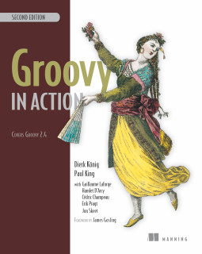

speaker {
name 'Cédric Champeau'
company 'Gradle Inc'
oss 'Apache Groovy committer',
successes (['Static type checker',
'Static compilation',
'Traits',
'Markup template engine',
'DSLs'])
failures Stream.of(bugs),
twitter '@CedricChampeau',
github 'melix',
extraDescription '''Groovy in Action 2 co-author
Misc OSS contribs (Gradle plugins, deck2pdf, jlangdetect, ...)'''
}Deep dive into the Groovy compiler
by Cédric Champeau (@CedricChampeau)
Who am I

Groovy in Action 2

Special coupon code: ctwspringo2gx
Agenda
Interpreted vs compiled
Scripts vs classes
Parsing
Abstract Syntax Trees
Resolving
Run-time vs compile-time
Static type checking
Bytecode generation
Class loading
Interpreted vs compiled
Groovy is a dynamic language
Dynamic != interpreted
Interpreted == a runtime interprets an AST
JVM is an interpreter + a JIT
Groovy compiles down to JVM bytecode
Scripts vs classes
A Java class
public class Greeter {
public static void main(String... args) {
System.out.println("Hello, "+args[0]);
}
}A Groovy script
println "Hello, $args[0]"What is the difference?
Classes are compiled to bytecode
Scripts are also compiled to bytecode
So it’s more a run-time vs compile-time discussion!
Compile-time
Given a set of source files
Compile them
Output is bytecode
cacheable (library, jar file, …)
loadable by the runtime (classloader)
Run-time
Same as compile-time but…
done during execution of the program!
Groovy does both
consequences on packaging
consequences on the size of the runtime
Run-time vs runtime
A runtime provides support libraries to execute a compiled program
Run-time is what happens at run time
Groovy has a runtime
Java also (the JRE, providing core classes)
Compilation phases
Groovy has 9 compilation phases (see
org.codehaus.groovy.control.CompilePhase)initialization
parsing
conversion
semantic analysis
canonicalization
instruction selection
class generation
output
finalization
Visualizing compilation phases
Parsing
Converts source code (text) into a concrete syntax tree (CST)
Where we send syntax errors
Groovy tries to minimize the errors at that phase
We make use of Antlr 2
Migration to Antlr 4 in progress
See
org.codehaus.groovy.antlr.AntlrParserPluginLimited transformations available (and not recommended)
Conversion
Converts a CST into an Abstract Syntax Tree
AST nodes are what the other compilation phases rely on
There’s already semantic information in an AST
Earliest phase an AST transformation can hook into
Conversion: AST nodes
2 categories
statements (
IfStatement,BlockStatement, …)expressions (
ConstantExpression,MethodCallExpression, …)
Know your AST!
particularily useful if you plan on writing AST transformations
Conversion: AST nodes example
println "Hello, $args[0]"Conversion: Abstract Syntax Tree
typically where an interpreter would step in
at the core of the Groovy compiler
AST classes live in
org.codehaus.groovy.astStill somehow runtime agnostic
In practice,
ClassNodealready bridges tojava.lang.Class
Start of visitor pattern
Semantic analysis
computation intensive phase
resolves class literals (symbols in AST, imports, …)
resolves static imports (constants, methods)
computes the scope of parameters and local variables
checks static scope vs instance scope
updates the AST of inner classes
collects AST transformations information
Semantic analysis: resolving
High price in compilation time
When we see
Foo, need to:check if
Foois something on classpathcheck if
Foois another class being compiled (or script)
Must avoid class initialization
Canonicalization
Finalizes the AST with information deduced from the semantic analysis
Completes generation of AST of inner classes
Completes enumerations with calls to
superWeaves trait aspects into classes implementing traits
Usually last chance to hook an AST transformation
Instruction selection
Formely used to select the instruction set (java version, …)
(Optional) Type checking
Post-type checking trait corrections
(optional) static compiler specific AST transformations
in short: all AST operations that need to be done just before generating bytecode
Class generation
Converts an AST into bytecode
Makes use of the ASM library
we’ll get back to it…
Output
(optional) write the generated bytecode into a file
Finalization
supposed to perform cleanup tasks
Unused today!
Putting it altogether
CompilationUnitis responsible for the compile phases lifecycleprocesses a set of
SourceUnita
SourceUnitrepresents a single source file (or script)a
CompileUnitgathers all ASTs of a compilation unit in a single placetypically used for resolution
all source units are processed phase by phase
AST Transformations
What are AST xforms?
User code that hooks into the compiler
Allows transforming the AST during compilation
A transform runs at a specific phases
a best, conversion
usually, semantic analysis
no later than canonicalization
If you do it later… all bets are off!
User code?
Groovy comes with several AST xforms
some features of the compiler are implemented as AST xforms
traits
static type checking
Static type checking
Implemented (mostly) as an AST transformation
Annotates AST nodes with metadata
Flow typing
Must be done very last in compiler phases
INSTRUCTION_SELECTION
Composition of traits
Traits are a superior replacement to mixins
Built-in since Groovy 2.3
How are they compiled?
Step 1: define a trait
trait HasName {
String name
}
class NamedObject implements HasName {}Step 2: convert a trait
Converts a trait into "JVM compatible" objets
interface HasName {
void setName(String name)
String getName(String name)
static class HasName$Trait$Helper {
public static void $init$(HasName $self) {
}
public static void $static$init$(java.lang.Class<HasName> $static$self) {
}
public static String getName(HasName $self) {
((HasName$Trait$FieldHelper) ($self)).HasName__name$get()
}
public static void setName(HasName $self, String value) {
((HasName$Trait$FieldHelper) ($self)).HasName__name$set(value)
}
}
static interface HasName$Trait$FieldHelper {
final public static String $ins$1HasName__name
String HasName__name$set(String val)
String HasName__name$get()
}
}Step 3 : weave the consumer
At canonicalization:
class NamedObject implements HasName, HasName$Trait$FieldHelper {
static {
HasName$Trait$Helper.$static$init$(NamedObject)
}
private String HasName__name
@groovy.transform.CompileStatic
public String HasName__name$get() {
return HasName__name
}
@groovy.transform.CompileStatic
public String HasName__name$set(String val) {
HasName__name = val
}
@Traits$TraitBridge(traitClass = HasName, desc = '(Ljava/lang/String;)V')
public void setName(String arg1) {
HasName$Trait$Helper.setName(this, arg1)
}
@Traits$TraitBridge(traitClass = HasName, desc = '()Ljava/lang/String;')
public String getName() {
HasName$Trait$Helper.getName(this)
}
public String HasNametrait$super$getName() {
if ( this instanceof GeneratedGroovyProxy) {
(String) (InvokerHelper.invokeMethod((((GeneratedProxy) this)).getProxyTarget(), 'getName', new Object[]))
} else {
super.getName()
}
}
public void HasNametrait$super$setName(String value) {
if ( this instanceof GeneratedGroovyProxy) {
InvokerHelper.invokeMethod((((GeneratedProxy) this)).getProxyTarget(), 'setName', new Object[])
} else {
super.setName(value)
}
}
}Bytecode generation
Groovy targets the JVM
Android is supported by post-processing bytecode (dex)
Bytecode generation library: ASM
3 different backends
legacy
invokedynamic
static compilation
But…
ASM is a low level API
Groovy uses a higher level API
AsmCodeGenerator: entry point, visitor pattern for the Groovy ASTwriters:
WriterController,BinaryExpressionWriter,InvocationWriter, … map ASTs to ASM patternshelpers:
BytecodeHelper,CompileStack,OperandStacksimplify the generation of bytecode
Dealing with specific runtimes
Dedicated writer versions
CallSiteWriter→StaticTypesCallSiteWriter
Optimized paths
Primitive optimizations
Static compilation
Static compiler can delegate to a dynamic writer
Dynamic runtime
int sum(int... values) {
values.sum()
}groovyc example.groovy
javap -v example.class
Dynamic runtime (2)
0: invokestatic #17 // Method $getCallSiteArray:()[Lorg/codehaus/groovy/runtime/callsite/CallSite;
3: astore_2
4: aload_2
5: ldc #42 // int 1
7: aaload
8: aload_1
9: invokeinterface #45, 2 // InterfaceMethod org/codehaus/groovy/runtime/callsite/CallSite.call:(Ljava/lang/Object;)Ljava/lang/Object;
14: invokestatic #51 // Method org/codehaus/groovy/runtime/typehandling/DefaultTypeTransformation.intUnbox:(Ljava/lang/Object;)I
17: ireturnInvokedynamic runtime
groovyc --indy example.groovy
0: aload_1
1: invokedynamic #50, 0 // InvokeDynamic #1:invoke:([I)Ljava/lang/Object;
6: invokestatic #56 // Method org/codehaus/groovy/runtime/typehandling/DefaultTypeTransformation.intUnbox:(Ljava/lang/Object;)I
9: ireturnStatic compiler runtime
groovyc --configscript config.groovy example.groovy
0: aload_1
1: invokestatic #38 // Method org/codehaus/groovy/runtime/DefaultGroovyMethods.sum:([I)I
4: ireturnPlaying with bytecode generation
int run(int i) {
_new 'java/lang/Integer'
dup
iload 1
invokespecial 'java/lang/Integer.<init>','(I)V'
invokevirtual 'java/lang/Integer.intValue','()I'
ireturn
}What happens?
An AST transformation is applied (
@Bytecode)Transforms "bytecode-like" method calls into actual ASM method calls
So allows writing "bytecode" directly as method body
Very useful for learning purposes
Limited to method bodies
Classloading
Bytecode →
byte[]Still have to load that code
For precompiled classes, can be done by any classloader
GroovyClassLoadersupports generation of classes at runtime
will cache the generated classes
RootLoader
Special classloader that reverses the logic of parent vs child
Used to implement different classpath
Mutable
CallSiteClassLoader
Used only on the legacy dynamic runtime
Loads call site classes
Call site class: dynamically generated classes which avoid use of reflection
Questions
We’re hiring!

Thank you!
Slides and code : https://github.com/melix/s2gx-deepdive-groovy-compiler
Groovy documentation : http://groovy-lang.org/documentation.html
Follow me: @CedricChampeau